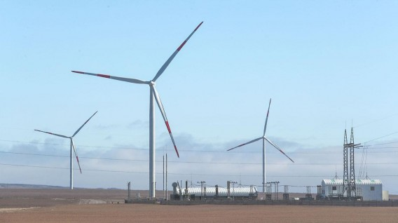

UNMSM
Impacto ambiental en proyectos de ingeniería hidráulica
Parque Eólico Nazca (Wayra I)

-
Aspectos generales
-
Ubicación: distrito de Marcona, provincia de Nasca, región de Ica.

- El Proyecto consiste en la construcción y operación de una planta eólica compuesta por 80 aerogeneradores, una subestación elevadora y otras obras complementarias; además incluye una Línea de Transmisión Eléctrica (LTE) de 0.3 km de longitud y nivel de tensión 220 kV, que unirá la Subestación Eléctrica del Parque Eólico Nazca (SE PE Nazca) con la subestación eléctrica existente Poroma, conectada al Sistema Eléctrico Interconectado Nacional (SEIN). La potencia instalada del parque eólico será de 160 MW, estimándose una producción anual de 670 GWh/año.
-
Ubicación: distrito de Marcona, provincia de Nasca, región de Ica.
-
Marco legal
-
Entidades Sectoriales Ambientales
- Ministerio de Energía y Minas – MINEM
- Organismo Supervisor de la Inversión en Energía – OSINERGMIN
- Dirección General de Electricidad – DGE
- Dirección General de Asuntos Ambientales Energéticos – DGAAE
- Dirección Regional de Energía y Minas – DREM
- Ministerio del Ambiente – MINAM
- Organismo de Evaluación y Fiscalización Ambiental – OEFA
- Ministerio de Agricultura – MINAGRI
- Dirección General de Asuntos Ambientales Agrarios – DGAAA
- Dirección General Forestal y de Fauna Silvestre – DGFFS
- Ministerio de Cultura – MC
-
Entidades Ambientales Descentralizadas
- Gobierno Regional
- Gobiernos locales
-
Normas Generales
- Constitución Política del Perú de 1993
- Código Penal - Decreto Legislativo Nº 635
- La Ley Marco para el Crecimiento de la Inversión Privada en el Perú (Decreto Legislativo N° 757)
- Ley General de Expropiaciones - Ley Nº 27117
- Ley de la seguridad y salud en el trabajo - Ley N°29783
- Reglamento de la Ley de Seguridad y Salud en el Trabajo – Decreto Supremo N° 005-2012-TR
- Reglamento Nacional de Tasaciones – Resolución Ministerial Nº 126-2007- VIVIENDA
-
Normas de Gobierno Regional y Local
- Ley Orgánica de Gobiernos Regionales – Ley Nº 27867
- Ley Orgánica de Municipalidades – Ley Nº 27972
- Ley Marco de Promoción de la Inversión Descentralizada – Ley Nº 28059
-
Normas de Conservación de los Recursos Naturales
- Reglamento de Clasificación de Tierras – Decreto Supremo Nº 017-2009-AG
- Ley Orgánica para el Aprovechamiento Sostenible de los Recursos Naturales – Ley Nº 26821
- Ley de Áreas Naturales Protegidas – Ley Nº 26834
- Modificación de la Ley de Áreas Naturales Protegidas – Decreto Supremo N° 038-2001-AG (D.S N° 003- 2011-MINAM)
- Ley sobre la Conservación y Aprovechamiento Sostenible de la Diversidad Biológica – Ley Nº 26839.
- Ley Forestal y de Fauna Silvestre – Ley Nº 29763
- Categorización de Especies Amenazadas de Fauna Silvestre y Prohíben su Caza, Captura, Tenencia, Transporte o Exportación con Fines Comerciales – D.S. N° 034-2004-AG
- Actualización de la lista de clasificación y categorización de las especies amenazadas de fauna silvestre legalmente protegidas – D.S. N°. 4-2014-MINAGRI
- Categorización de Especies Amenazadas de Flora Silvestre – Decreto Supremo Nº043-2006-AG
- Opinión Técnica Previa Vinculante en Defensa del Patrimonio Natural de las Áreas Naturales Protegidas – Decreto Supremo N° 004-2010-MINAM
-
Normas del Sector Salud
- Ley General de Salud – Ley Nº 26842 Ley
- Reglamento de la Ley General de Residuos Sólidos – Decreto Supremo Nº 057-2004-PCM
- Modificación de la Ley General de Residuos Sólidos – Decreto Legislativo N° 1065
- Ley que regula el Transporte Terrestre de Materiales y Residuos Peligrosos – Ley Nº 28256
- Reglamento Nacional de Transporte Terrestre de Materiales y Residuos Peligrosos – Decreto Supremo Nº 021-2008-MTC.
- Reglamento sobre Valores Límite Permisibles para Agentes Químicos en el Ambiente de Trabajo – Decreto Supremo Nº 015-2005-SA
- Reglamento de Seguridad y Salud en el Trabajo con Electricidad – Resolución Ministerial Nº 111-2013- MEM/DM
-
Normas de Calidad Ambiental
- Reglamento de Estándares Nacionales de Calidad Ambiental del Aire – Decreto Supremo Nº 074-2001-PCM
- Reglamento de Estándares Nacionales de Calidad Ambiental para el Ruido – Decreto Supremo Nº 085- 2003-PCM
- Estándares de Calidad Ambiental para Radiaciones No Ionizantes – Decreto Supremo Nº 010-2005-PCM
- Estándares de Calidad Ambiental para Aire – Decreto Supremo Nº 003-2008-MINAM.
- Estándares de Calidad Ambiental (ECA) para Suelo – Decreto Supremo N° 002-2013-MINAM
- Disposiciones Complementarias para la Aplicación de los Estándares de Calidad Ambiental (ECA) para Suelo – Decreto Supremo N° 002-2014-MINAM
- Niveles Máximos Permisibles para Efluentes Líquidos producto de las actividades de generación – Resolución Directoral Nº 008-97-EM/DGAA
- Estándares Nacionales de Calidad Ambiental para Agua – Decreto Supremo Nº 002-2008-MINAM.
- Tipificación de Infracciones y Escala de Multas y Sanciones de OSINERGMIN Resolución Nº 028-2003- OS/CD.
-
Normas del Sector Energía y Minas
- Ley de Concesiones Eléctricas – Decreto Ley N° 25844.
- Reglamento de Protección Ambiental para las Actividades Eléctricas – Decreto Supremo N° 029-94-EM.
- Reglamento de Consulta y Participación Ciudadana para la Realización de Actividades Energéticas dentro de los Procedimientos Administrativos de Evaluación de los Estudios Ambientales – Resolución Ministerial Nº 535-2004-MEM-DM
- Lineamientos para la Participación Ciudadana en Actividades Eléctricas- Resolución Ministerial 223-2010- MEM/DM
-
Normas de Evaluación Ambiental
- Ley de Evaluación de Impacto Ambiental para Obras y Actividades – Ley N° 26786
- Ley del Sistema Nacional de Evaluación de Impacto Ambiental – Ley Nº 27446
- Ley Marco del Sistema Nacional de Gestión Ambiental – Ley Nº 28245
- Reglamento de la Ley Marco del Sistema Nacional de Gestión Ambiental – Decreto Supremo Nº 008-2005- PCM
- Ley General del Ambiente – Ley Nº 28611
- Reglamento de la Ley del Sistema Nacional de Evaluación de Impacto Ambiental – Decreto Supremo N° 019-2009-MINAM.
- Ley del Sistema Nacional de Evaluación y Fiscalización Ambiental – Ley Nº 29325
-
Normas sobre Patrimonio Cultural
- Ley General de Patrimonio Cultural – Ley N°. 28296
- Ley General de Amparo al Patrimonio Cultural de la Nación – Ley N° 24047
- Reglamento de Investigaciones Arqueológicas – R.S. No. 004-2000-ED
- Delitos Contra el Patrimonio Cultural – D.L. N° 635
-
Normas sobre Procedimientos Administrativos
- Disposiciones Especiales para Ejecución de Procedimientos Administrativos – Decreto Supremos N° 054- 2013-PCM.
- Disposiciones Especiales para Ejecución de Procedimientos Administrativos y otras medidas para impulsar Proyectos de Inversión Pública y Privada – Decreto Supremo N° 060-2013-PCM.
- Reglamento sobre Transparencia, Acceso a la Información Pública Ambiental, Participación y Consulta Ciudadana – Decreto Supremo N° 002-2009-MINAM
-
Entidades Sectoriales Ambientales
-
MATRIZ DE IDENTIFICACION DE POSIBLES IMPACTOS SOCIO-AMBIENTALES

Reynaldo Baldini